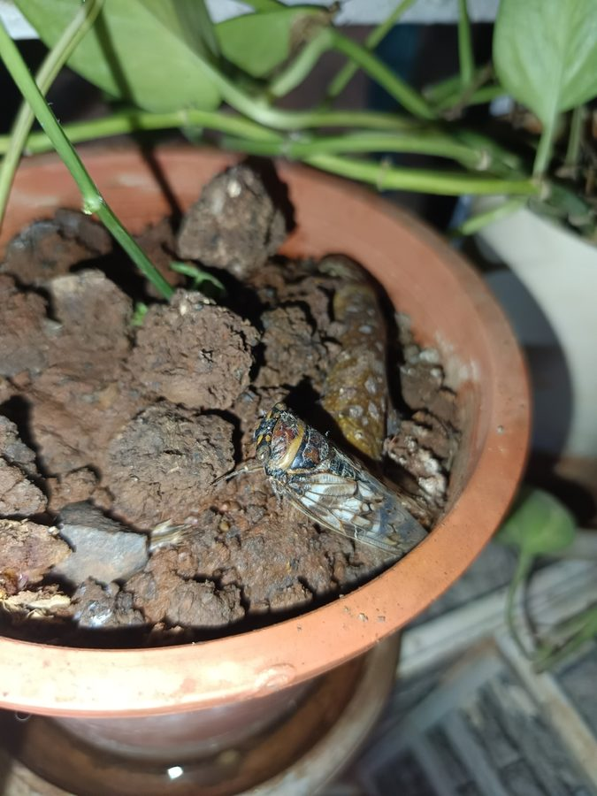

झींझीCicada
Platypleura capitata · Cicadidae · INS-0033

- Scientific nameवैज्ञानिक नाम
- Platypleura capitata (Olivier, 1790)
- Familyकुल
- Cicadidae
- Hindiहिंदी
- झींझी
- Local namesस्थानीय नाम
- jheenjhi, cicada, sannata, bhunbhun
- Status hereयहाँ की स्थिति
- native
- Movementआवागमन
- Resident, here all year
- IUCNIUCN
- not evaluated
- Reviewसमीक्षा
- audited and independently read
When to look कब देखें
Expected mainly in May, June, July, August.मुख्यतः मई, जून, जुलाई, अगस्त में अपेक्षित।
Uses and possibilities उपयोग और संभावनाएँ
Drawn from the documented uses in the profile below, where each is labelled traditional, current or a research lead. All uses →
झींझी / Cicada
Platypleura capitata (Olivier, 1790) — Cicadidae
झींझी (सिरेडा) — पूर्वी उत्तर प्रदेश के बागों और पुराने पेड़ों पर पाया जाने वाला एक मध्यम आकार का निवासी उड़ने वाला कीट है, जो अपनी कान फोड़ने वाली तेज़ आवाज़ (buzzing sound) के लिए प्रसिद्ध है। गर्मियों के मौसम (मई-जून) में आम के बागों और पीपल के पेड़ों से आने वाली तीव्र भिनभिनाहट या सन्नाटे की आवाज़ इसी कीट द्वारा उत्पन्न की जाती है। केवल नर झींझी ही अपने पेट के आधार पर स्थित विशेष झिल्लीदार अंगों, जिन्हें टिम्बल (tymbals) कहा जाता है, को तेज़ी से हिलाकर यह आवाज़ पैदा करते हैं; मादाएं पूरी तरह से मौन रहती हैं। इनका भूमिगत जीवनकाल बहुत लंबा होता है, जहाँ इनके लार्वा (nymphs) कई वर्षों तक ज़मीन के नीचे पेड़ों की जड़ों का रस चूसकर विकसित होते हैं, जबकि इनका वयस्क रूप केवल 2 से 4 सप्ताह ही जीवित रहता है।
Quick Identification त्वरित पहचान
| Feature | Description |
|---|---|
| Size | Medium-sized, stout insect; body length 22–26 mm; wingspan 65–78 mm |
| Colouration | Mottled grey-brown with black and green tones, blending perfectly with tree bark |
| Wings | Large, broad; forewings mottled with grey-brown patches; hindwings partly dark brown |
| Head | Very broad, wider than long, with two large, widely-set compound eyes |
| Pronotum | Broad with laterally expanded, collar-like margins (pronotal collars) |
| Sound | Produces a loud, continuous buzzing hum from the abdomen (males only) |
Field tip: Look on the bark of old mango or Peepal trees in summer. Search for a medium-sized, grey-brown insect with mottled wings clinging flat to the bark. It is highly camouflaged; you will likely hear its deafening buzz long before you see it.
Morphology आकारिकी
Biometrics (typical measurements for adult specimens in local mango orchards):
| Measurement | Range |
|---|---|
| Body length | 22.0–26.0 mm |
| Wingspan | 65.0–78.0 mm |
Body details: The body is robust and squat. The head is extremely broad and blunt, bearing two large, dark, globose compound eyes and three small, shiny ocelli (simple eyes) forming a triangle on the forehead. The pronotum is characterized by broad, leaf-like expansions on the sides, which are greenish-grey with black markings. The forewings are leathery at the base and mottled with dark grey-brown spots. The legs are short and strong. In males, the ventral side of the anterior abdomen features two large plates (opercula) that cover and protect the sound-producing tymbals.
Behaviour & Ecology व्यवहार और पारिस्थितिकी
Summer acoustic advertiser.
- Buzzing communication: Males sing to attract mates. By contracting internal muscles, they vibrate the drum-like tymbals on their abdomen up to 400 times per second, producing a loud buzzing call.
- Tree bark camouflage: Clings tightly to rough tree bark, using its mottled patterns to remain invisible to visual predators. If approached, it stops singing immediately.
- Feeding style: Both adults and nymphs feed on plant sap. Adults use their proboscis to pierce the bark of twigs, but cause no significant damage.
Ecological Role पारिस्थितिक भूमिका
Soil aerator and nutrient recycler.
- Underground engineer: The nymphs dig extensive tunnel systems around tree roots, aerating the soil and facilitating water infiltration.
- Biomass resource: The sudden seasonal emergence of adults provides a protein-rich food source for local birds, squirrels, and bats.
- Exuviae decomposition: The empty chitinous nymphal skins (exuviae) left on tree trunks decompose and return organic matter to the soil.
Life Cycle / Phenology जीवन चक्र
- Egg laying: The female uses a sharp ovipositor to cut slits in twigs, laying eggs inside. The eggs hatch in 4–6 weeks.
- Nymphal stage: The tiny nymphs drop to the ground and burrow deep into the soil (up to 1 metre deep). They spend 2 to 3 years underground, feeding on the root sap of mature trees and developing through multiple moults using their shovel-like forelegs to dig.
- Emergence: In late spring (May), mature nymphs emerge at night, climb tree trunks, and anchor themselves. The skin splits dorsally, and the adult emerges, leaving the empty shell behind. Adults live for only 2–4 weeks.
Host Plants or Prey आहार
Host plants:
- Mango (Mangifera indica [FLR-0011 Mango]), Peepal (Ficus religiosa [FLR-0006 Peepal]), Neem (Azadirachta indica [FLR-0009 Neem]), and Banyan (Ficus benghalensis [FLR-0010 Bargad]).
Predators / Natural Enemies शत्रु
- Birds: House Crows (such as [BRD-0027 House Crow]), Jungle Babblers (such as [BRD-0035 Jungle Babbler]), and owls.
- Mammals: Fruit bats and insectivorous bats hunt them at dusk.
- Insects: Praying mantises and cicada-hunter wasps capture adults.
Agricultural / Human Relevance कृषि प्रासंगिकता
Cultural sound of summer.
- Seasonal marker: The song of the Jheenjhi is culturally associated with the hot summer afternoons (dopahari) in eastern UP.
- Traditional toys: The empty brown nymphal shells (kichhri) found on tree trunks are collected by rural children and pinned to their clothes as play ornaments.
- Forest health: A high density of cicadas indicates healthy, mature tree root systems and undisturbed soils.
Expected Locally स्थानीय रूप से अपेक्षित
Not a field record. Written from published accounts for eastern Uttar Pradesh. No confirmed local sighting yet — if you have seen it, that is what the atlas needs.
अभी तक स्थानीय पुष्टि नहीं। यह विवरण प्रकाशित स्रोतों से है, किसी अवलोकन से नहीं।
Look for it in village orchards and school grounds across Basti district, particularly in blocks like Harraiya, Vikramjot, and Basti Sadar. The buzzing sound should be most audible in local mango groves during June, when the calls are loudest. The species is to be expected wherever mature shade trees occur, especially in June and early July.
Distribution वितरण
Global range: Widespread across the Indian Subcontinent, covering India, Nepal, Pakistan, Bangladesh, and Sri Lanka.
In India: Common in the deciduous forest zones and agricultural plains of northern and central India.
In Uttar Pradesh: Present in all districts with mature tree canopies.
In Basti district / eastern UP: Abundant in all rural orchards and groves.
Research Questions शोध प्रश्न
Anyone can investigate these | कोई भी इन प्रश्नों की जाँच कर सकता है
- How does the noise level of cicada buzzing in Basti orchards change with air temperature and humidity? / हवा के तापमान और आर्द्रता के साथ बस्ती के बागों में झींझी की आवाज का स्तर कैसे बदलता है? — Measure decibel levels at different times of the day.
- Which tree species is most preferred by cicadas for emergence and shedding of nymphal husks? / झींझी के लार्वा बाहर निकलने और केंचुल (husks) छोड़ने के लिए किस पेड़ की प्रजाति को सबसे अधिक पसंद करते हैं? — Count exuviae on different tree trunks in an orchard.
- Do male cicadas sing in unison or do they alternate their songs to avoid acoustic overlap? — Analyze audio recordings of singing males.
- Does the removal of leaf litter under mango trees reduce the number of emerging cicadas? — Compare emergence holes in cleared vs. leaf-mulched orchard floors.
- Can children search the trunks of mango trees to see how high from the ground the empty cicada husks are attached? — A simple measuring activity to identify the climbing height of nymphs.
Similar Species मिलती-जुलती प्रजातियाँ
| Species | Key Difference | हिंदी |
|---|---|---|
| Cryptotympana atrata (Black Cicada) | Much larger; glossy black body; transparent clear wings; very different metallic call | काली झींझी — बड़ी, चमकदार काली |
| Platypleura octoguttata (Mottled Cicada) | Has eight small, distinct white spots on the pronotum and wing bases | चित्तीदार झींझी — आठ सफेद धब्बे |
| Platypleura mackinnoni (Pine Cicada) | Found only in the pine forests of the Himalayan foothills; different wing coloration | पहाड़ी झींझी — देवदार वनों में |
Field rule: Medium size (~22–26 mm), mottled grey-brown coloration, broad pronotum with lateral collars, and producing a loud buzzing song from the trunks of deciduous trees identify the Cicada.
Taxonomy & Classification वर्गीकरण
Original description. Guillaume-Antoine Olivier described the Cicada as Cicada capitata in 1790 in Encyclopédie Méthodique. Histoire Naturelle. Insectes (Vol. 5, p. 757). The type locality was India. The genus name Platypleura is derived from the Greek platys (broad) and pleura (side/rib), referring to the lateral expansions of the pronotum. The specific name capitata is Latin for "headed", referring to its large, wide head.
Subspecies. Monotypic — no subspecies are currently recognized.
Family and order placement. Placed in the order Hemiptera, suborder Auchenorrhyncha, family Cicadidae, subfamily Cicadinae.
Phylogenetic notes. Platypleura capitata belongs to the tribe Platypleurini, which contains species with highly developed bark-mimicking camouflage and acoustic organs specialized for calling in hot climates.
IUCN status rationale. Not evaluated (NE) by the IUCN Red List. It is common and widely distributed in agricultural and woodland areas, with no immediate conservation threats.
Photo Gallery फोटो गैलरी
References संदर्भ
- Olivier, G. A. (1790). Encyclopédie Méthodique. Histoire Naturelle. Insectes. Tome V. Paris, Panckoucke, p. 757. [original description]
- Distant, W. L. (1906). The Fauna of British India, including Ceylon and Burma. Rhynchota. Vol. 3. Taylor and Francis, London, p. 61.
- Mani, M. S. (1968). General Entomology. Oxford & IBH Publishing Co., New Delhi.
- Marathe, K., et al. (2020). State-level checklist of cicadas (Hemiptera: Cicadidae) of India. Journal of Threatened Taxa, 12(14), 17001-17025.
- ZSI Checklist — Cicadidae of Uttar Pradesh (2016).
- GBIF Occurrence Data — Platypleura capitata, Uttar Pradesh (2010–2025).
Source file: species/fauna/insects/cicada.md